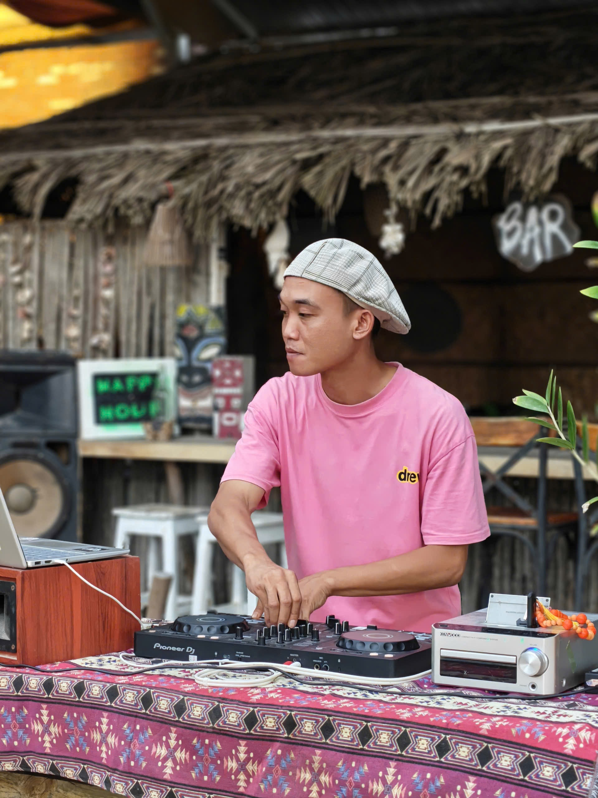

S4tiva

01 // Identity & Manifesto
Một hành trình âm thanh dịch chuyển không ngừng: khởi nguồn từ những tần số nguyên bản của rừng núi Dalak, cuốn vào nhịp sống hối hả của đô thị không ngủ Sài Gòn, để rồi tìm thấy bến đỗ đích thực nơi đất biển Mũi Né.
Trước năm 2020, anh là người đứng sau Sativa Chill (Quận 1) - một không gian cafe bar cực kỳ đình đám tại Sài Gòn. Đến năm 2019, tiếng gọi của biển khơi đưa anh về với Mũi Né. Chính tại đây, cú bén duyên mãnh liệt với Reggae và Dub đã thay đổi tất cả. Nhận ra đây chính là 'tần số tâm hồn' của mình, anh quyết định ở lại để bắt trọn mọi cơ hội từ vùng đất lộng gió này.
Từ 2020 đến 2024, anh giữ vai trò Resident DJ tại Kingston Hut Beach Bar — một tọa độ văn hóa party, điểm hẹn giao lưu của du khách quốc tế lớn nhất nhì Mũi Né.
Nung nấu một lòng đam mê mãnh liệt với âm nhạc nguyên bản và sự tự do tuyệt đối, khao khát lớn nhất của S4tiva là biến Mũi Né thành một trạm phát sóng khổng lồ. Lão muốn kéo những cộng đồng âm nhạc chất lượng nhất, những 'anh em năm châu bốn bể' tụ hội về đây để cùng hòa mình vào những lễ hội âm nhạc và những bữa tiệc bãi biển bất tận.
02 // The Roots & Vibe
Đào sâu vào những dòng nhạc mang tính 'gốc rễ' tuy còn kén người nghe tại Việt Nam, anh sử dụng âm thanh như một thứ ngôn ngữ kể chuyện, một liều thuốc tinh thần để khích lệ người nghe. Không dừng lại ở đó, anh sở hữu khả năng kiểm soát sàn nhảy cực kỳ linh hoạt với nhiều hệ sinh thái âm nhạc khác nhau:
Vinyl Collector
Sở thích, đam mê và phong cách sống: Tìm kiếm, lưu trữ và chơi những chiếc đĩa than nhuốm màu thời gian.
03 // Sound System Network
Kết nối với hệ thống âm thanh và các set nhạc của S4tiva qua các nền tảng: